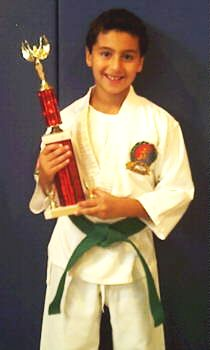

760-568-0961
68225 Ramon Road
Cathedral City, CA 92334
|
|
760-568-096168225 Ramon Road |
| Home Announcements Black Belt Profiles Terminology |
Dojo NewsAugust 2013We Need help for the September Shiai. Is anyone available to help? KARATE PIZZA FUN COMING AGAIN SOON... WATCH FOR THE DATE Thank you to the parents, students, friends, and instructors for helping make our last pizza party a success, and a special day in our dojo.  Congratulations to Joshua Earbudnas Look for a new page being compiled called "Who's Who in Palm Springs Isshinryu" I expect to have it completed by September 2013. |
Belt Testing
|
|
Home
Announcements
Black Belt Profiles
Terminology © 2013 Isshinryu Karate 760-568-0961 |